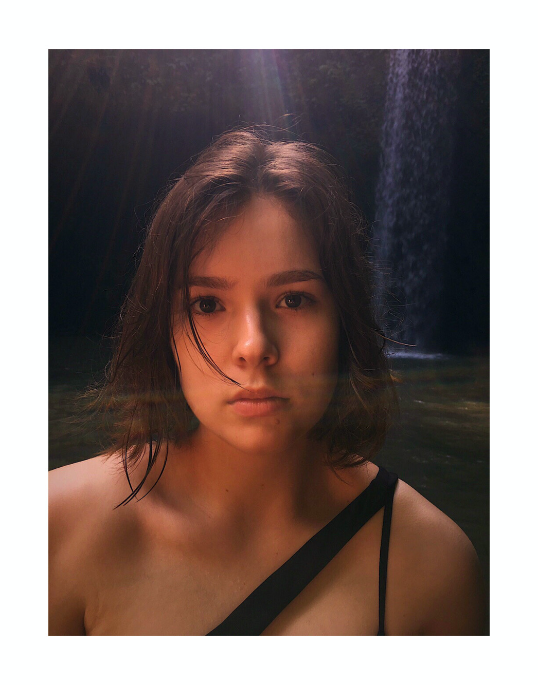
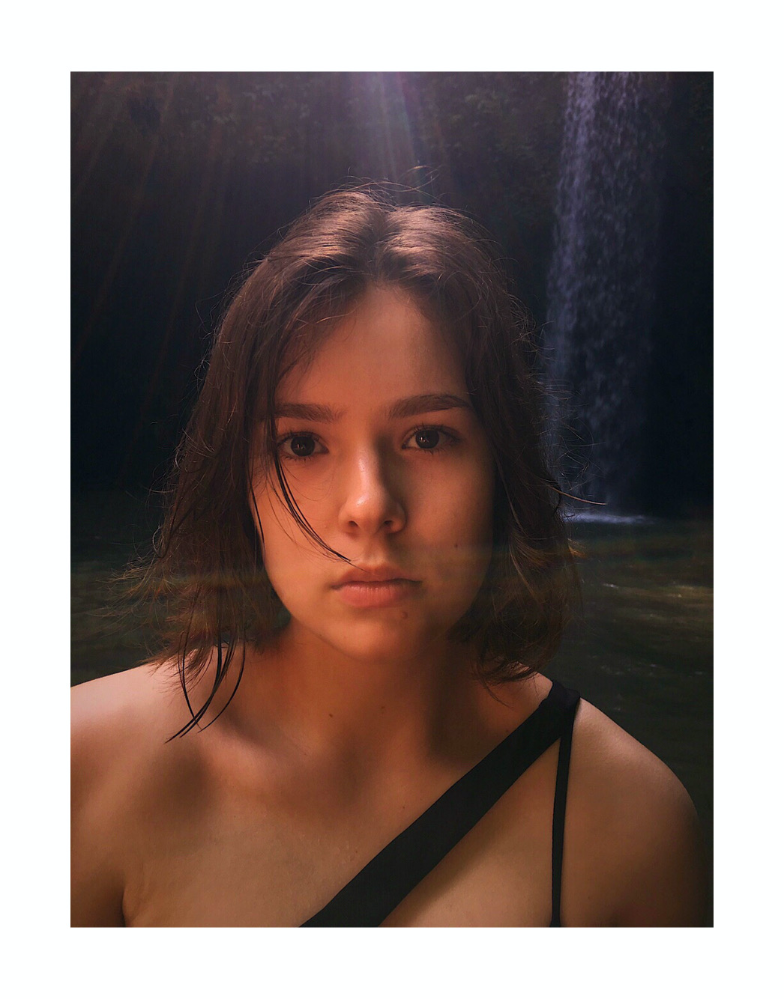

Место учебы
Фундаментальная и прикладная лингвистика, НИУ ВШЭ, Москва
Человек, умеющий делать HTML

Фундаментальная и прикладная лингвистика, НИУ ВШЭ, Москва
Москва
ГБОУ Школа № 843
Привет! Я Варя, и тут можно узать небольшой топ интересных фактов обо мне:
1) Я была волонтером на ежегодном форуме "Открытые инновации 2019" в Skolkovo. Это был мой первый опыт волонтерства, но самый удачный. Теперь это мое новое хобби, которое, как гвоворится, " cheers me up". Если бы не сессия в конце октября, с удовольтвием бы поехала на очередные "инновации" :)))
2) Я обожаю путешествовать. Путешествия вдохновляют меня, заряжают креативом и дарят неральный позитив. Еще с детсва у меня есть традиция, которой я никогда не изменяю : с каждой новой страны или города привозить магнитик на холодильник. Сейчас эта коллекция с трудом помещается на холодильнике, но зато, как и прежде, напоминает мне, как же круто путешествовать по миру и знакомится с культурами разных стран.
3) Я люблю активный образ жизни. Увлекаюсь танцами: в школе танцевала бальные танцы, потом занималась в шоу-баллете Аллы Духовой "Тодес". Сейчас в свободное время пробую себя в разных других танцевальных стилях.
 
